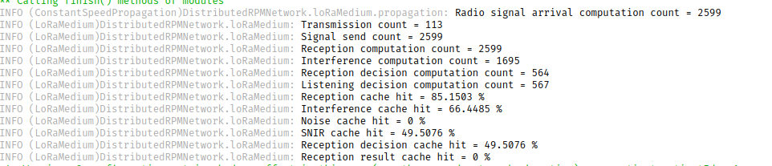

Remote Patient Monitoring over LoRa
From ESP32 bedside nodes and authenticated raw-LoRa frames to a Raspberry Pi 5 edge gateway, a clinician dashboard and a 20-patient multi-hop network simulation.
- 34 B authenticated frame
- 233/233 software tests tested
- 79/80 frames delivered simulated
- 92/97 episodes warned early synthetic
Five layers, one measurement
The same measurement (patient, sequence, time, heart rate, SpO₂, temperature, fall, alert level, routing fields) travels through every layer.
- 01
Embedded systems
ESP32-S3 firmware samples every 30 s, flags sensor faults and signs each frame.
firmware written · not flashed - 02
LoRa communication
Raw LoRa (not LoRaWAN), SF7/125 kHz, 34-byte frames, up to 4 relay hops.
bench link operating - 03
Remote monitoring
Raspberry Pi 5 gateway software, role-based dashboard, alerts and audit.
233 tests passing - 04
Network simulation
OMNeT++ 6.5 · INET 4.6 · FLoRa 1.3.2 model of 20 patients and 3 relays.
simulated - 05
Performance validation
Delivery, delay per hop, early-warning lead time and false alarms.
synthetic + simulated
From physical IoT implementation to distributed network simulation
industrie-4.0-lora
Physical and software side: ESP32 patient/relay firmware, the v2 authenticated frame, the Raspberry Pi 5 gateway, the web platform, the early-warning model, the report and the presentation.
github.com/Iheb1Bekir/industrie-4.0-lora → Repository BRPM_LoRa_Research
Network side: an OMNeT++/INET/FLoRa model of a 20-patient, 3-relay deployment with application-level forwarding, validation and duplicate suppression.
github.com/Iheb1Bekir/RPM_LoRa_Research →How they connect: both use the same measurement fields and radio profile (SF7, 125 kHz, 14 dBm, at most 4 hops), and the platform imports the simulation's result summary into its network page. They are not yet one deployed end-to-end system: the physical sensor node and on-site radio tests are pending.
A real LoRa link on the bench

- Heltec WiFi LoRa 32 V3ESP32-S3 + SX1262 + OLED, bench receiveroperating
- Raspberry Pi 5edge gateway, UART0 and SPI0 headerUART configured
- ESP32-S3 patient nodefirmware for MAX30102, DS18B20, MPU-6050pending
- SX1276/78 or SX1262raw LoRa PHY, chosen explicitly per boardpending
No data on /dev/serial0. On the Pi 5 it pointed to the debug UART (ttyAMA10); dtoverlay=uart0-pi5 routes UART0 to GPIO14/15 (/dev/ttyAMA0). On the Heltec, GPIO43 belongs to the USB bridge, so UART1 TX moved to GPIO2. Reception on the Pi is still to be confirmed.
Three tiers, from bedside to screen
Select a component to see what it does and how far it has been validated.
34 bytes carry the whole measurement, signed
Time on air at SF7 / 125 kHz
Semtech AN1200.13 formula. A compact JSON of the same 15 fields is 241 B.
Why it matters
- 0.26 % duty cycle at one frame per 30 s (1 % SRD sub-band limit).
- HMAC-SHA256 64-bit tag per device key; relays may change only the hop counter.
- Replay window of 62 frames per device on the gateway.
- 0.90 pure-ALOHA success for 20 nodes on one channel (theory): scaling needs channels, spreading factors or scheduling.
79 of 80 frames delivered over a multi-hop LoRa network
OMNeT++ 6.5.0 · INET 4.6.0 · FLoRa 1.3.2 (opp_env). Doctor gateway at the centre, 20 patients on 25/45/80 m rings, 3 relays on a 30 m ring; patients 17–20 reach the gateway through an ordered relay chain.
DistributedRPMNetwork: frames in flight, then the end-of-run statistics (120 s simulated).
End-to-end delay per relay hop
Simulated delays come from FLoRa 1.3.2's airtime model, which assumes a fixed 20-byte payload; the real 34-byte frame needs at least 77.1 ms per hop (analytical bars).
Relay load and the single loss
Patient 18's first frame reached relay 1 at about −124.8 dBm, below SF7 sensitivity: shadowing on the outer ring, not a protocol error. Transmissions are staggered 1.5 s apart, so this run cannot show collisions.
The dashboard, recorded live
Real screen recording of the platform in simulation mode: every patient on screen is synthetic.
- Three roles, enforced on the server: doctor, medical assistant (assigned patients), family caregiver (one patient, recorded consent).
- Live overview: server-sent events, alert lifecycle with escalation, and a data-flow strip that makes radio losses visible.
- LoRa digital twin: direct and relay paths, RSSI/SNR and delivery ratio per device.
- Early warning: model score, contributing features and calibration, next to deterministic threshold alerts.
Warnings minutes ahead, and an honest false-alarm count
Gradient boosting predicts a sustained threshold breach within 10 min from the last 15 min; trained and tested on a synthetic 600-profile cohort split by patient. Decision support, not diagnosis.
Model score on one synthetic test profile
The score crosses the high level 3.5 min before the sustained breach; isolated heart-rate artifacts at −31 and −8 min cause transient spikes.
What is proven, and how
233/233 automated tests; C++ frame encoder byte-identical to the Python reference.
79/80 delivered, 64 direct, 15 relayed, 0 collisions (OMNeT++, 120 s).
LoRa link with a Heltec V3 receiver; Pi 5 UART configured, reception not confirmed.
77.1 ms on air for 34 B; 0.26 % duty cycle; ALOHA estimate 0.90 for 20 nodes.
Model evaluated on synthetic data only; no patient data was used anywhere.
Sensor node, on-site radio tests, Pi 5 deployment, payload encryption, TLS.
Research prototype, not a medical device and not clinically validated. The relay design is a custom application-level forwarding scheme, not LoRaWAN.
Explore the project
Iheb Bekir · with Med Abderrahmen Essafi and Ahmed Askri